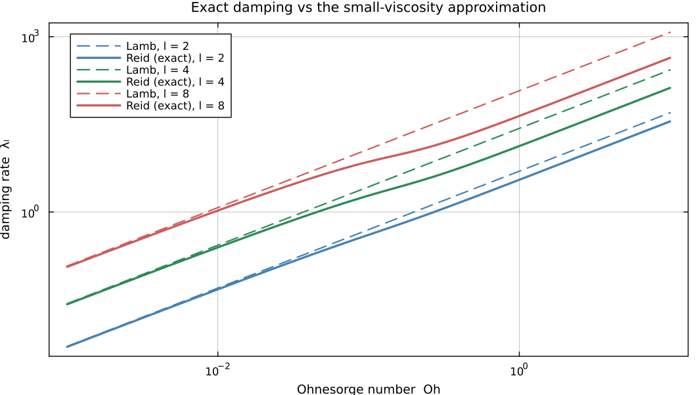

Finite-Oh Damping and Frequency
The companion page, "The Viscous Drop: Reid (1960)", ends with an exact transcendental characteristic equation for a viscous drop. This page turns that equation into two numbers per mode that a timestepper can actually use: a damping rate $\lambda_l(\mathrm{Oh})$ and a squared frequency $\omega_l^2(\mathrm{Oh})$, valid at any Ohnesorge number rather than only in the low-viscosity limit.
Why this page exists
DropSolver's default viscous model, :lamb, uses the classical coefficients $\omega_l^2 = l(l-1)(l+2)$ and $2\lambda_l = 2\,\mathrm{Oh}\,(l-1)(2l+1)$ for every mode $l$. Lamb's formula is the leading-order-in-$\mathrm{Oh}$ asymptotic reduction of Reid's exact equation (Section 9 of the companion page), and its error grows with both $\mathrm{Oh}$ and $l$, so its domain of validity is narrower than "low viscosity" alone would suggest.
Concretely: the shear-thinning fluid used for DropSolver's validation dataset has a rest-state Ohnesorge number $\mathrm{Oh}_0 \approx 57$ (from $\eta_0=8.43\,\mathrm{Pa\,s}$, $\mathrm{Bo}=0.012$, $R=0.3\,\mathrm{mm}$, $\sigma=72.8\,\mathrm{mN/m}$) and a fully-thinned $\mathrm{Oh}_\infty \approx 0.025$ – a $\sim2260\times$ swing that spends most of its time outside the range Lamb's formula covers. The coefficients derived here are the ones the :reid viscous model evaluates.
Three ingredients
Getting these coefficients out of Reid's equation reliably rests on three choices, worth stating before the algebra starts. (The numerical approach follows the sister package SpectralKM.jl, a fully spectral kinematic-match model for droplet-bath impact.)
- A downward Bessel-ratio recurrence that never evaluates a Bessel function directly. Evaluating $j_l$ and $j_{l+1}$ separately and dividing overflows at ordinary parameter values – $l=16$, $\mathrm{Oh}=0.3$ is already enough – even though the ratio itself stays $O(1)$.
- Continuation in Oh for the dominant root. A single Newton solve from Lamb's asymptotic guess converges to a different, subdominant root once $\mathrm{Oh}$ grows; Section 1 shows this at $l=16$, $\mathrm{Oh}=0.3$.
- The parametrization itself. Molaček & Bush (2012) carry a per-mode inertia coefficient $A_l(\mathrm{Oh})$ alongside a rescaled damping $D_l(\mathrm{Oh})$, keeping the restoring term fixed at the inviscid $l(l-1)(l+2)$. The form used here instead keeps unit inertia and lets both the damping and the frequency-squared term vary with $\mathrm{Oh}$:
\[\ddot A_l + 2\lambda_l(\mathrm{Oh})\,\dot A_l + \omega_l^2(\mathrm{Oh})\,A_l = \text{forcing}.\]
The two are equivalent for free decay – same pair of roots, differing by an overall rescaling of the ODE – but the unit-mass form needs no additional inertia term in the timestepper, and it is the one derived here. The note at the end of Section 3 covers why the equivalence is not automatic once contact forcing ($B_l$) enters.
What this derives
Reid's characteristic equation has, for each $l$ and each $\mathrm{Oh}$, a pair of dominant eigenvalues $\sigma_1(\mathrm{Oh})$, $\sigma_2(\mathrm{Oh})$: complex conjugates below the critical $\mathrm{Oh}$ (damped oscillation), two distinct real values above it (aperiodic "fast" and "slow" decay). Vieta's formulas on that pair give
\[\lambda_l = \frac{\sigma_1+\sigma_2}{2}, \qquad \omega_l^2 = \sigma_1\sigma_2,\]
the coefficients of the unit-mass oscillator whose eigenvalues are exactly Reid's own pair. Section 3 verifies these against Molaček & Bush's independently-published closed-form limits, with no free parameters.
The second root – needed once the mode is overdamped – cannot be obtained by continuing the complex-conjugate pair through the critical $\mathrm{Oh}$. Doing that makes both branches converge onto the same real root as $\mathrm{Oh}$ grows, giving a degenerate pair with no warning. The correct second root is a separate, much smaller real root (a "creep" mode) found by an independent search. Section 2 shows both.

Lamb's formula (dashed) against Reid's exact damping rate (solid). They agree in the small-viscosity limit and diverge as $\mathrm{Oh}$ grows – and the divergence sets in earlier for higher $l$, which is why a solver resolving many modes cannot rely on the asymptotic form.
Section 1: Evaluating Reid's characteristic equation robustly
The equation itself is
\[\frac{\alpha^4}{q^4} + 1 = \frac{2(l-1)}{q^2}\left[\,l + (l+1)\frac{q-2l\,Q_{l+1/2}(q)}{q-2Q_{l+1/2}(q)}\right], \qquad \alpha^2 = \frac{\sqrt{l(l-1)(l+2)}}{\mathrm{Oh}},\]
with $Q_{l+1/2}(q)=j_{l+1}(q)/j_l(q)$. Its zeros in $q$ are the eigenvalue wavenumbers of the linearized viscous drop problem.
The Bessel ratio, without ever evaluating a Bessel function
Evaluating $j_{l+1}(q)$ and $j_l(q)$ separately and dividing is a trap: at small $\mathrm{Oh}$, $q\sim\sqrt{\sigma/\mathrm{Oh}}$ has large $|\mathrm{Im}\,q|$, and both functions overflow long before their ratio – which stays $O(1)$ – does. The fix is a downward recurrence that computes the ratio directly. It follows from the standard three-term spherical Bessel recurrence $j_{l-1}+j_{l+1} = \frac{2l+1}{q}j_l$, divided through by $j_l$ and inverted.
"""
sph_bessel_ratio(l, q) -> Complex
`Q_l(q) = j_{l+1}(q)/j_l(q)` by downward recurrence. The recurrence length
`pad` grows with `abs(q)` and is capped: a caller passing a very large `|q|`
(an overshooting Newton step, say) would otherwise spend minutes in this
loop instead of returning quickly with an inaccurate value that a downstream
residual check can reject.
"""
function sph_bessel_ratio(l::Integer, q::Number)
pad = min(max(60, l ÷ 2 + ceil(Int, abs(q))), 5000)
n0 = l + pad + min(ceil(Int, abs(q)), 5000)
Q = q / (2 * n0 + 3)
for n in n0:-1:(l+1)
Q = 1 / ((2n + 1) / q - Q)
end
return Q
endMain.sph_bessel_ratioWith that in hand the characteristic equation is a direct transcription. Its zero set is what the rest of this page hunts for.
"""
reid_char(q, Oh, l)
Residual of Reid's exact characteristic equation for mode `l`. Zero of this
function <=> `q` is an eigenvalue wavenumber of the linearized viscous drop
problem at this `(Oh, l)`.
"""
function reid_char(q, Oh, l)
alpha2 = sqrt(l * (l - 1) * (l + 2)) / Oh
Q = sph_bessel_ratio(l, q)
lhs = alpha2^2 / q^4 + 1
rhs = 2 * (l - 1) / q^2 * (l + (l + 1) * (q - 2l * Q) / (q - 2Q))
lhs - rhs
endMain.reid_charRoot-finding
The solver is a damped, step-capped Newton iteration with backtracking: each step is capped at a fraction of $|q|$ and halved until the residual decreases. An undamped Newton step can overshoot into an argument where sph_bessel_ratio's downward recurrence needs an enormous number of terms; that surfaces not as an exception but as an evaluation that takes minutes, which is what the step cap and backtracking are there to prevent.
Seeded with Lamb's small-Oh asymptotic guess, that Newton solve gives a root directly. It is correct at small $\mathrm{Oh}$ and unreliable beyond that, and is kept both as the seed for the continuation method below and as the comparison that shows why continuation is needed:
function dominant_root_direct(Oh, l)
sigma0 = sqrt(l * (l - 1) * (l + 2))
gamma0 = (l - 1) * (2l + 1) * Oh
q0 = sqrt(complex(gamma0 / Oh, -sigma0 / Oh))
imag(q0) > 0 && (q0 = -q0)
q = newton_complex(qv -> reid_char(qv, Oh, l), q0)
imag(q) > 0 ? conj(q) : q
enddominant_root_direct (generic function with 1 method)The reliable method is continuation in $\mathrm{Oh}$: start at an $\mathrm{Oh}$ small enough that Lamb's guess is genuinely asymptotic, then walk geometrically up to the target, seeding each step's Newton solve with the previous step's converged root. This is what makes the result trustworthy past the underdamping transition.
function dominant_root_tracked(Oh, l; oh_start=1e-4, nsteps=24)
Oh <= oh_start && return dominant_root_direct(Oh, l)
q = dominant_root_direct(oh_start, l)
for ohv in exp.(range(log(oh_start), log(Oh); length=nsteps + 1))[2:end]
q = newton_complex(qv -> reid_char(qv, ohv, l), q)
end
q
enddominant_root_tracked (generic function with 1 method)The tracked root satisfies $\text{reid\_char}=0$ to better than $10^{-10}$ across all three regimes for $l=2$: underdamped ($\mathrm{Oh}=0.05$), near-critical ($\mathrm{Oh}=1.85$), and deeply overdamped ($\mathrm{Oh}=57.4$, the rest-state value of the validation fluid).
Where the direct solve picks the wrong branch
At $l=16$, $\mathrm{Oh}=0.3$ the direct Newton solve returns $\sigma \approx 425.6$, purely real. Continuation returns $\sigma \approx 49.2 - 10.5i$. Both are genuine roots – each satisfies the characteristic equation to better than $10^{-8}$, so this is not a convergence failure – but they differ by more than a factor of eight, and the tracked one has the smaller real part. By Section 8 of the companion page, smaller real part means slower decay means dominant: continuation finds the physical root, the direct solve does not.
One subtlety rules out the obvious sanity check. Lamb's coefficient at this point, $\mathrm{Oh}(l-1)(2l+1) = 148.5$, exceeds $\omega_{l;0}=\sqrt{l(l-1)(l+2)} = 65.7$, which in Lamb's approximate oscillator would mean overdamping. Reid's exact equation is not overdamped here: the dominant pair is still complex. Reid's theory can remain underdamped at a point where Lamb's cruder model has already crossed into spurious overdamping, so agreement with Lamb's coefficient is not a valid test in this regime. The test used instead is that continuation finds a less damped root than the direct solve does.
Section 2: The second root, and the continuation trap
Once the mode is overdamped the two dominant eigenvalues are two distinct real numbers, and the second one has to be found on its own. A small-$q$ asymptotic solution gives a good starting guess: substituting the small-argument ratio $Q(q)\sim q/(2l+3)$ into the characteristic equation and balancing the two singular terms ($1/q^2$ and $1/q^4$) gives
\[q \sim \alpha^2\sqrt{\frac{2l+1}{2(l-1)(2l^2+4l+3)}},\]
valid only in the overdamped regime, where that second root is real and small.
function second_root_analytic_guess(Oh, l)
alpha2 = sqrt(l * (l - 1) * (l + 2)) / Oh
alpha2 * sqrt((2l + 1) / (2 * (l - 1) * (2l^2 + 4l + 3)))
endsecond_root_analytic_guess (generic function with 1 method)Which branch to take depends on whether we are underdamped (where the second root is simply the conjugate of the first, and no search is needed) or overdamped (where it is a separate root entirely):
function find_second_root(Oh, l, q1)
if abs(imag(q1)) > 1e-9 * abs(q1)
return conj(q1) # underdamped: true conjugate pair, no separate search
end
q0 = second_root_analytic_guess(Oh, l)
newton_complex(qv -> reid_char(qv, Oh, l), complex(q0); maxiter=200, tol=1e-13)
endfind_second_root (generic function with 1 method)Why continuing both branches does not work
The tempting shortcut is to track $q_1$ and a naive $q_2$, initialized as $\overline{q_1}$ at a safely underdamped $\mathrm{Oh}$, and continue both through the critical point using each step's own result as the next Newton guess. Doing that for $l=2$ from $\mathrm{Oh}=0.5$ up to $57.4$, the two branches collapse onto the same root, $q = 2.66556$, agreeing to one part in $10^6$. The correct second root at that $\mathrm{Oh}$, found from find_second_root's independent analytic guess, is $q = 0.017875$ – two orders of magnitude away. Nothing in the continuation reports trouble, and a degenerate pair still produces plausible-looking $\lambda_l$ and $\omega_l^2$, so the two roots must be sought separately.
Section 3: $\lambda_l(\mathrm{Oh})$ and $\omega_l^2(\mathrm{Oh})$ via Vieta
Take the unit-mass per-mode oscillator with no forcing,
\[\ddot A_l + 2\lambda_l\dot A_l + \omega_l^2 A_l = 0,\]
whose characteristic equation is $x^2 - 2\lambda_l x + \omega_l^2 = 0$. Requiring its roots to be Reid's own $\sigma_1,\sigma_2$ (with $\sigma_i = q_i^2\,\mathrm{Oh}$, the $q^2\mathrm{Oh}$ time-unit convention used throughout DropSolver), Vieta's formulas immediately give
\[\lambda_l = \frac{\sigma_1+\sigma_2}{2}, \qquad \omega_l^2 = \sigma_1\sigma_2.\]
That is the whole construction. Lamb's formula – the :lamb model – is $\lambda_l = \mathrm{Oh}(l-1)(2l+1)$, $\omega_l^2 = l(l-1)(l+2)$, which Section 3.1 confirms is the $\mathrm{Oh}\to0$ limit of this.
The $\sigma_i$ are kept complex throughout: in the underdamped regime $q_1,q_2$ are a conjugate pair, so $\sigma_1,\sigma_2$ are too, and taking $\mathrm{Re}(q)^2$ instead would discard the imaginary part and corrupt the oscillatory regime.
function compute_lambda_omega2(Oh, l)
q1 = dominant_root_tracked(Oh, l)
q2 = find_second_root(Oh, l, q1)
s1 = q1^2 * Oh
s2 = q2^2 * Oh
lambda = real(s1 + s2) / 2
omega2 = real(s1 * s2)
lambda, omega2
endcompute_lambda_omega2 (generic function with 1 method)3.1 The low-Oh limit reproduces Lamb
As $\mathrm{Oh}\to0$, $\omega_l^2$ should approach the inviscid $l(l-1)(l+2)$ and $\lambda_l$ should approach $\mathrm{Oh}(l-1)(2l+1)$. Both do, monotonically, for every $l$ tested:
| $l$ | $\omega_l^2$ at $\mathrm{Oh}=10^{-3}$ | at $\mathrm{Oh}=10^{-4}$ | inviscid target |
|---|---|---|---|
| 2 | 7.9996 | 8.0000 | 8 |
| 3 | 29.9968 | 29.9999 | 30 |
| 4 | 71.9888 | 71.9996 | 72 |
| 5 | 139.972 | 139.9991 | 140 |
| 10 | 1079.574 | 1079.986 | 1080 |
The error shrinks between the two $\mathrm{Oh}$ values for both $\lambda_l$ and $\omega_l^2$, and is under 2% at $\mathrm{Oh}=10^{-4}$.
3.2 The high-Oh limit reproduces Molaček & Bush
The independent check at the other end comes from Molaček & Bush (2012), who parametrize the same physics with an inertia coefficient $A_l$ and a dissipation coefficient $D_l$ (see Section 10 of the companion page for the mapping and for their Eq. 31). Translating between the two gauges,
\[\lambda_l = \frac{l^2\,\mathrm{Oh}\,D_l}{A_l}, \qquad \omega_l^2 = \frac{l(l-1)(l+2)}{A_l},\]
and at high $\mathrm{Oh}$ their published limit is $D_l \to (l-1)(2l^2+4l+3)/[l^2(2l+1)]$.
$\lambda_l$ and $\omega_l^2$ alone already determine the physics completely; $D_l$ is recovered here only so it can be compared against that independently published number. At $\mathrm{Oh}=1000$ the recast value matches the published limit to better than $0.1\%$ for every mode tested – and to six digits for most of them:
| $l$ | $D_l$ recast at $\mathrm{Oh}=1000$ | M&B high-Oh limit |
|---|---|---|
| 2 | 0.950000 | 0.950000 |
| 3 | 1.047619 | 1.047619 |
| 4 | 1.062500 | 1.062500 |
| 5 | 1.061818 | 1.061818 |
| 10 | 1.041429 | 1.041429 |
The comparison involves no fitted parameters, so it confirms that the two parametrizations carry the same physics for free decay.
3.3 Nothing jumps at the critical Oh
On one side of the critical $\mathrm{Oh}$ the two eigenvalues are a complex-conjugate pair; on the other they are two unrelated real numbers. The coefficients built from them are nevertheless continuous across the transition: sweeping $l=2$ across $\mathrm{Oh}\in[0.3,1.3]$ in 40 steps, the largest single-step change in either $\lambda_2$ or $\omega_2^2$ is $0.079$, with no jump where the two regimes meet.
3.4 Where that critical Oh actually is
Chandrasekhar located the oscillatory/aperiodic transition for $l=2$ numerically, reporting $\sigma_{2;0}R^2/\nu = \alpha^2 = 3.69$ with $\sigma_{2;\nu}/\sigma_{2;0} = 0.968$ there. Those are published numbers from 1959, arrived at by completely different means, so they make a good independent test of everything above.
Bisecting on "is the dominant root still complex?" puts the transition at $\mathrm{Oh}_c = 0.7665$ for $l=2$. Since $\alpha^2 = \sqrt{l(l-1)(l+2)}/\mathrm{Oh}$, that is $\alpha^2 = \sqrt{8}/0.7665 = 3.690$, and the damping-to-inviscid-frequency ratio there is $\lambda_2/\omega_{2;0} = 0.9674$. Chandrasekhar's two numbers, recovered to three digits from the root finder above.
The practical reading: for $l=2$, oscillation survives up to $\mathrm{Oh}\approx0.77$ and everything above that is aperiodic creep. The validation fluid that motivates this page sits at $\mathrm{Oh}_0\approx57$ at rest – a factor of 74 into the aperiodic regime – and thins to $\mathrm{Oh}_\infty\approx0.025$, deep in the oscillatory one. A single impact therefore crosses this transition, which is why the Lamb coefficients alone are not sufficient for this fluid.
Domain of validity: free decay
Substituting exact eigenvalues into a second-order oscillator is exact for free decay only. Under forcing (the $l B_l$ contact-pressure term), the true system carries memory from the full discarded viscous spectrum, which neither this parametrization nor Molaček & Bush's $A_l$/$D_l$ form captures exactly; nor do the two forms then agree with each other, since an overall rescaling of the equation leaves the free-decay roots invariant but not a forcing term's relative weight. The coefficients derived here are free-decay coefficients, and the forced response is an open question for both parametrizations.
Section 4: Live cross-check against the running DropSolver
The runs below use the default :lamb coefficients, $\lambda_{\text{Lamb}} = (l-1)(2l+1)\mathrm{Oh}$, which differ from Reid's exact eigenvalue by an $O(\mathrm{Oh})$ correction even at $\mathrm{Oh}$ as small as $0.02$ (a $\sim7\%$ gap, per the numbers below). The cross-check therefore splits into two separate claims.
(a) The solver reproduces Lamb's formula
Exciting a single mode and measuring its free-decay rate from a solve_drop! run:
| $\mathrm{Oh}$ | $l$ | Lamb $\gamma$ | measured $\gamma$ | relative error |
|---|---|---|---|---|
| 0.02 | 2 | 0.10000 | 0.10310 | 3.1% |
| 0.02 | 3 | 0.28000 | 0.28528 | 1.9% |
| 0.05 | 2 | 0.25000 | 0.25333 | 1.3% |
Under 5% throughout: with viscous=:lamb, the measured decay rate is the Lamb rate, with no finite-Oh correction.
(b) The exact eigenvalue converges to that same value
The complementary claim: Lamb's formula is the $\mathrm{Oh}\to0$ limit of $\lambda_l$ as computed here, not merely something numerically nearby. For $l=2$ the gap closes monotonically, and roughly linearly in $\mathrm{Oh}$, which is the expected order of the correction:
| $\mathrm{Oh}$ | $\lambda_2$ (Reid, exact) | $\gamma_{\text{Lamb}}$ | relative gap |
|---|---|---|---|
| 0.05 | 0.218735 | 0.250000 | 12.5% |
| 0.02 | 0.092524 | 0.100000 | 7.5% |
| 0.005 | 0.024097 | 0.025000 | 3.6% |
| 0.001 | 0.004920 | 0.005000 | 1.6% |
The gap is still 12.5% at $\mathrm{Oh}=0.05$, a drop most would call low-viscosity. That is the cost of the Lamb approximation at the upper end of its nominal range.
Summary
Lamb's damping formula is the low-viscosity limit of a more general, exact result. This page derived that result – $\lambda_l(\mathrm{Oh})$, $\omega_l^2(\mathrm{Oh})$, in the unit-mass parametrization – directly from Reid's characteristic equation, checked it against Molaček & Bush's independently-published limits with no fitting, recovered Chandrasekhar's 1959 critical point to three digits, and confirmed that the solver's default :lamb coefficients agree with it in the regime they were designed for. These are the coefficients returned by drop_viscous_coeffs(M, Oh, :reid).
Scope. Everything here concerns free decay of a single mode. The two known ways to get the eigenvalues wrong – taking the direct Newton solve's branch (Section 1) and continuing both branches through the critical $\mathrm{Oh}$ (Section 2) – are documented above because both fail silently, returning plausible numbers. The forced, contact-coupled response is discussed at the end of Section 3 and is not settled here.
This page was generated using Literate.jl.